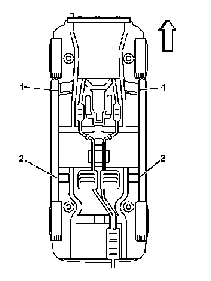
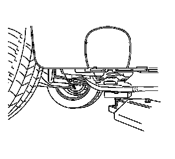
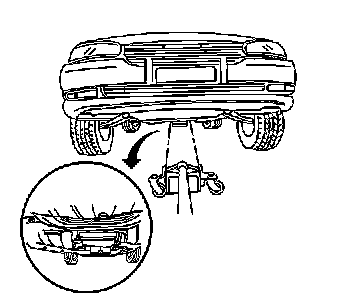

Vehicle Lifting: Service and Repair
Lifting and Jacking the Vehicle
Jacking Points for Lifting Equipment

Lifting and Jacking Points

Caution: To help avoid personal injury, always use jack stands when you are working on or under any vehicle that is supported only by a jack.
Caution: To avoid any vehicle damage, serious personal injury or death when major components are removed from the vehicle and the vehicle is supported by a hoist, support the vehicle with jack stands at the opposite end from which the components are being removed and strap the vehicle to the hoist.
Notice: When you are jacking or lifting a vehicle at the frame side rails or other prescribed lift points, be certain that the lift pads do not contact the catalytic converter, the brake pipes or the fuel lines. If such contact occurs, vehicle damage or unsatisfactory vehicle performance may result.
Before beginning any lifting procedure, be sure the vehicle is on a clean, hard, level surface. Be sure all the lifting equipment meets weight standards and is in good working order. Be sure all the vehicle loads are equally distributed and secure. If the vehicle is only being supported at the frame side rails, make sure the lifting equipment does not put too much stress on or weaken the frame side rails (1).
If using any other hoisting methods than those called out, take special care not to damage the fuel tanks, the exhaust system or the underbody.
Frame Contact Hoist
Front Hoist Pads

Important: The front hoist pads must not contact the rocker panels, the front fenders, the floor pan, or the stone guard moldings. Remove the jacking covers from the rocker panels if necessary.
Position the frame contact front hoist pads as follows:
* Under the front frame rail reinforcement.
* The long sides of the pads, if applicable parallel to the frame rails.
Rear Hoist Pads

Important: The rear hoist pads must not contact the rocker panels, the rear fenders, the floor pan, or the stone guard moldings. Remove the jacking covers from the rocker panels if necessary.
Position the frame contact rear hoist pads as follows:
* Under the rear frame rail at the rear axle cradle mount flange.
* The long sides of the pads, if applicable perpendicular to the frame rails.
Floor Jacks
When lifting a vehicle with a floor jack, block the wheels at the opposite end from which the vehicle is being lifted. Use jack stands to provide additional support.
Under the Frame Rail Reinforcements
Important: The floor jack pad must not contact the rocker panels, the floor pan, or the stone guard moldings. Remove the jacking covers from the rocker panels if necessary.
Position the floor jack pad under the front frame rail reinforcement or under the rear frame rail at the rear axle cradle mount flanges.
Under the Engine Front Crossmember Frame

Important: The floor jack pad must not contact the oil pan, splash shield or the steering linkage.
Position the floor jack pad under the center of the engine front crossmember frame.
Jack Stands
Under the Frame Rail Reinforcements
Important: The jack stands must not contact the rocker panels, the floor pan, or the stone guard moldings. Remove the jacking covers from the rocker panels if necessary.
Position the jack stand under the frame rail reinforcements.